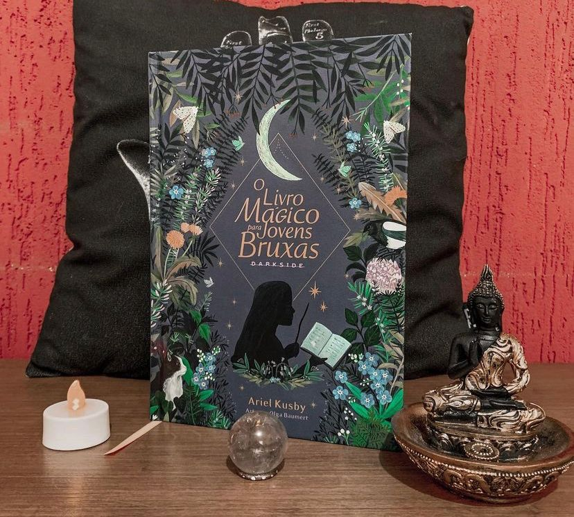

O Livro Mágico Para Jovens Bruxas
(Ariel Kusby - DarksideBooks)
⭐⭐⭐⭐
Que edição mais lindaaaa! Por fora e por dentro! A @darksidebooks caprichou no livro, totalmente impecável! Mas, você deve estar se perguntando: será que a vale a pena ? O livro é só pra iniciantes? Só serve pra adolescentes? Vem encontrar a resposta comigo…
Para ser bruxa não é necessário fazer objetos voarem, passear por aí em uma vassoura ou ler mentes. Praticar a bruxaria, na verdade, tem muito mais a ver com estar em sintonia com você mesma e fazer bom uso da sua individualidade, da sua inteligência e da sua bondade. Bruxinhas já iniciadas ou que estão aguardando o começo do treinamento vão adorar O Livro Mágico para Jovens Bruxas. Inspirada pelo folclore e pela magia da natureza, Ariel Kusby escreveu um guia adorável de feitiços, poções e atividades para resolver problemas, fazer amigos e estabelecer um vínculo com o mundo natural. Neste guia, é possível aprender a confeccionar uma varinha, fazer amizade com as fadas e ler folhas de chá ? tudo isso com ingredientes e materiais fáceis de encontrar. O livro também possui um glossário de símbolos e termos mágicos. Aprenda a preparar a Poção de Amor e Bondade e a lançar o Feitiço do Arco-Íris do Amor-Próprio e o Feitiço de Pedido a uma Estrela. A artista e designer Olga Baumert emprestou seu traço delicado e multicolorido para ilustrar o livro e refletir a pluralidade e diversidade da comunidade bruxa. Um livro que encoraja as jovens bruxas a estreitar o laço com o mundo natural ? e, principalmente, com elas mesmas.
O livro serve para todas as idades e vai te ajudar em ritualísticas simples, aquelas que as vezes até esquecemos. A ilustração do livro nos traz calma e tudo nele nos remete a uma leitura simples, ritualística minimalista porém essencial para toda bruxa solitária ou não saber! Recomendo demais.